Recommandation de musique
Dans ce TP, on continue notre exploration de notions et techniques de base pour la science des données. On va notamment manipuler un fichier de données beaucoup plus gros que précédemment. Après avoir exploré ce jeu de données, on s'intéressera à la recommandation de produits.
Tous les TPs précédents doivent impérativement avoir été faits.
Exploration du jeu de données
Introduction
Dans ce TP, nous allons utiliser un jeu de données qui contient tous les morceaux de musique de 1960 à 2009 qui ont été classés au Billboard aux États-Unis, c'est-à-dire les morceaux les plus populaires durant cette période.
Ce fichier de données est disponible à l'url suivante : https://philippe-preux.github.io/ensg/miashs/l3-sd2/datasets/EvolutionPopUSA_MainData.csv.
À faire :
- Chargez ce fichier. Appelons music l'objet python dans lequel vous chargez ce tableau de données.
- Combien y a-t-il de données ?
- Combien y a-t-il d'attributs par donnée ?
- Quels sont ces attributs ?
- Que représente chaque ligne ?
Exploration initiale du jeu de données
Ce jeu de données indiquant les morceaux populaires au fil des années, on peut étudier l'évolution des styles de musique populaire au cours de ces dernières décennies.
Ce jeu de données contient de nombreuses données, chacune décrite par de nombreux attributs. On a :
- recording_id est un numéro permettant d'identifier un morceau de manière unique.
- artist_name est le nom de l'artiste associé à ce morceau.
- artist_name_clean contient la même information mais nettoyée : si on veut trouver tous les morceaux d'un artiste donné, c'est cet attribut qu'il faut utiliser.
- track_name est le titre du morceau.
- first_entry est la date d'entrée dans le classement.
- quarter est le trimestre d'entrée dans le classement.
- year est l'année d'entrée dans le classement.
- cluster : les morceaux ont été segmentés/regroupés automatiquement par genres musicaux. Cet attribut est le numéro de segment/groupe associé à un morceau. Il s'interprête comme suit :
- northern soul/soul/hip hop/dance
- hip hop/rap/gangsta rap/old school
- easy listening/country/love song/piano
- funk/blues/jazz/soul
- rock/pop/new wave
- female voice/pop/R'n'B/Motown
- country/classic country/folk/rockability
- dance/new wave/pop/electronic
- classic rock/country/rocj/singer-songwriter
- love song/slow jams/soul/folk
- funk/blues/dance/blues rock
- soul/R'n'B/funk/disco
- rock/hard rock/alternative/classic-rock
- hTopic_01..hTopic_08 sont 8 attributs décrivant des caractéristiques harmoniques des morceaux (tonalité, changements d'accord).
- tTopic_01..tTopic_08 sont 8 attributs décrivant le timbre des morceaux (percussion, calme, voix, ...).
- Les attributs (numériques) suivants numérotés 28 à 269 ont été générés par divers algorithmes à partir des signaux audio de chaque morceau. Ces attributs encodent différents aspects liés au style de musique (rythme, accords, ...).
S'agissant d'un si gros jeu de données, il est vraiment indispensable de passer un peu de temps pour comprendre sa structure et aussi faire en sorte que les champs soient bien typés. C'est le but des questions qui suivent.
À faire :
- l'attribut artist_name_clean doit être un attribut nominal.
- L'attribut first_entry doit être une date.
- Combien y a-t-il d'artistes différents dans ce jeu de données ?
- Regardez quelques données pour comprendre les différents champs.
- Recherchez des morceaux que vous connaissez.
Pour cette question (et d'autres), il peut être utile d'utiliser la fonction find () qui recherche une chaîne de caractères dans une autre. Regardez page 137 de ce livre dont je vous ai déjà conseillé la lecture. - Recherchez tous les morceaux d'un artiste que vous connaissez.
Écrire une fonction recherche_artiste () qui renvoie la liste des numéros de données correspondant à une certaine chaînes des caractères. Par exemple :recherche_artiste ("Swift") >>> [8589, 8590, 8591, 8592, 8593, 8890, 10049, 10050, 10051, 10052, 11249, 11351, 11352, 11396, 11397, 11398, 11939, 13919]Attention, dans certains cas, rechercher seulement le nom d'un artiste produit des résultats correspondant à plusieurs artistes portant le même nom. Par exemple, regardez de près le résultat de recherche_artiste ("Jackson") ; le champ artist_name_clean est là pour résoudre ce problème, à moins d'indiquer le prénom et le nom (par exemple, find_artist("Janet Jackson")).
Amélioration de la structure du jeu de données
Plusieurs choses sont à faire sur ce jeu de données avant de l'utiliser.
À faire :
- Ajouter un attribut month qui contient le numéro du mois de sortie du morceau (c'est-à-dire le mois dans l'attribut first_entry). Comme c'est un peu compliqué, je vous indique comment faire :
import datetime as dt music ["month"] = music.loc [:,"first_entry"].dt.month
- L'attribut quarter est censé contenir le numéro du trimestre mais il contient aussi l'année et la lettre Q (comme Trimestre en anglais). Regardez la valeur de cet attribut pour la première donnée par exemple qui est la chaîne de caractères "1987 Q3". On veut donc que l'attribut quarter contienne seulement le numéro du trimestre, soit 3 pour cette donnée.
Aide : la fonction split() agit sur une chaîne de caractères et devrait vous être très utile pour réaliser cela (voir le livre indiqué ci-dessus).
Remarque : il faut que cet attribut soit numérique, pas une chaîne de caractères.
Sorties au fil du temps
- On s'intéresse à la répartition du nombre de morceaux différents sortis chaque année. Commencez par faire un graphique de ce nombre. Cela doit vous donner quelque chose comme cela :
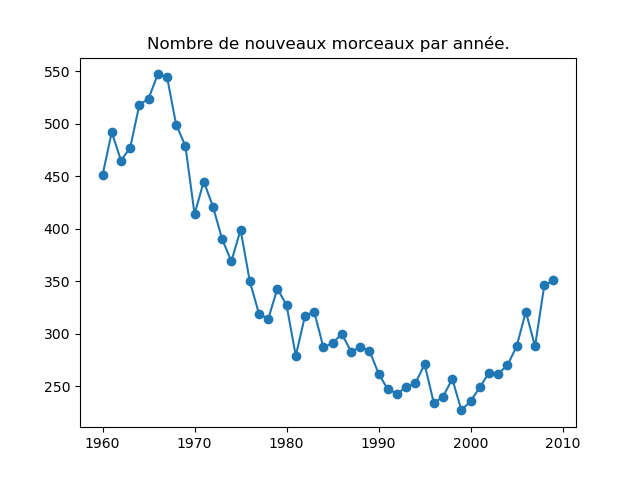
Qu'observez-vous ? Comment interprêtez-vous cela ? - Y a-t-il des mois pendant lesquels il y a systématiquement plus, ou moins, d'entrées dans le classement ? Faire un graphique pour répondre à cette question.
- Cela évolue-t-il au cours du temps ? Vous pouvez faire un graphique par année ou, plus simplement, vous pouvez faire un graphique pour un certain ensemble d'années, par exemple tous les 10 ans à partir de 1960.
(On appelle cela de l'échantillonnage : quand il y a trop de possibilités à regarder, on en sélectionne quelques-unes et si elles partagent les mêmes caractéristiques, on se dit que probablement, celles que l'on n'a pas regardées sont identiques. Bien sûr, ce n'est pas très rigoureux et si l'on veut être rigoureux, il faut toutes les regarder. On comprend bien ici la notion de biais : si l'on ne sélectionne pas les échantillons au hasard mais avec un certain biais, on n'a pas de raison de penser que les échantillons non examinés sont identiques à ceux que l'on a choisi. Par exemple si on prend les années de début de décennie comme je le propose ici, il y a un biais ; il faudrait prendre des années en les sélectionnant au hasard entre 1960 et 2009.) - Même question pour les trimestres.
Popularité des genres musicaux au fil du temps
- On s'intéresse à l'évolution de la popularité des genres musicaux. Pour cela, on va faire des graphiques représentation le nombre de morceaux d'un genre donné (caractérisé par l'attribut cluster) au fil du temps.
Faire un tel graphe en comptant le nombre de morceaux du cluster 1 présent dans le classement durant chaque année. Vous devez obtenir quelque chose comme cela :

et les autres genres :
 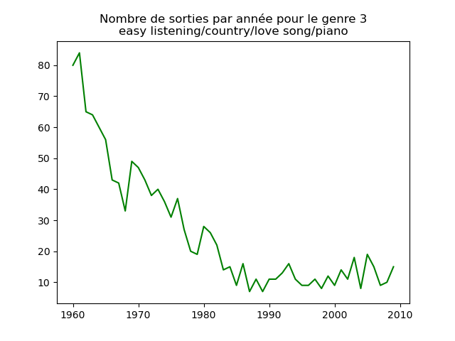
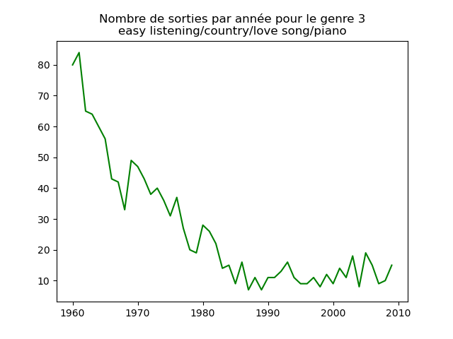
 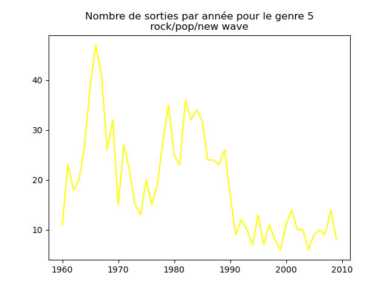
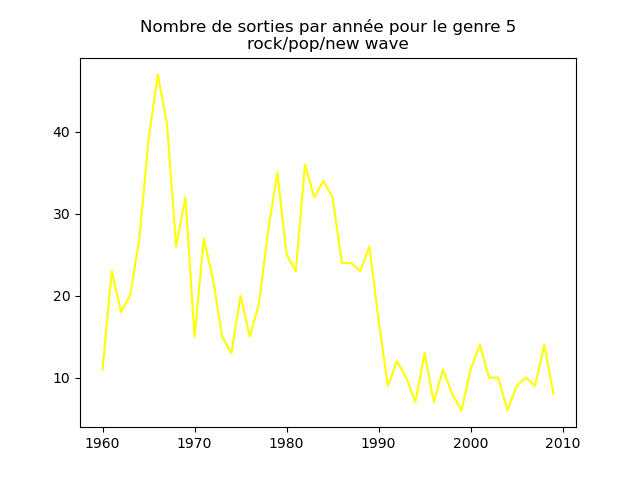

 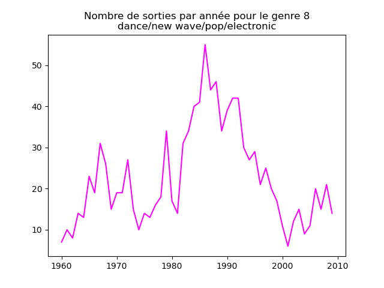
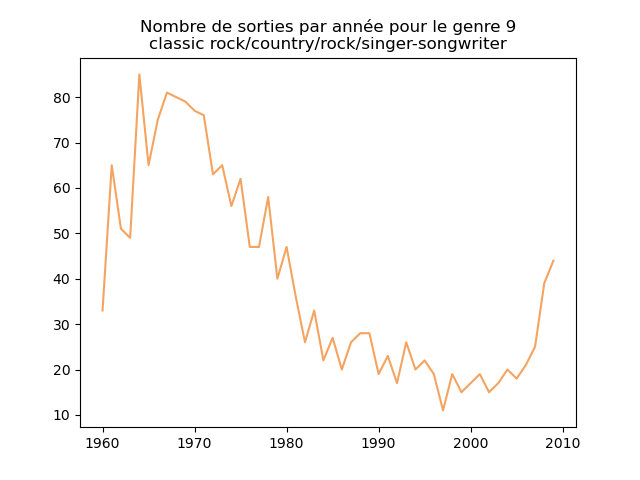
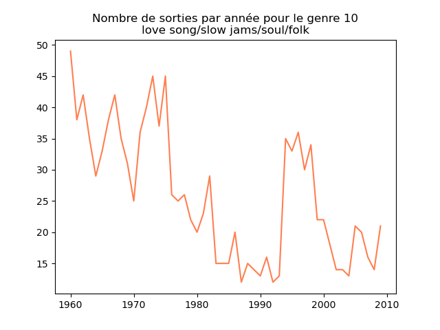
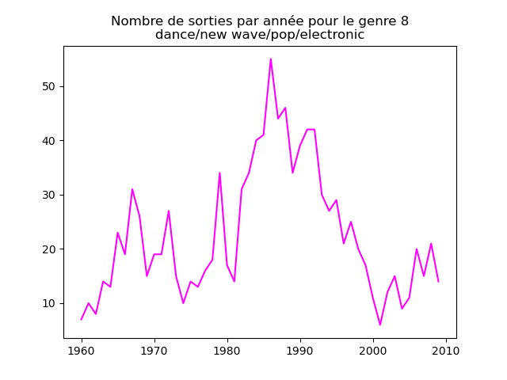
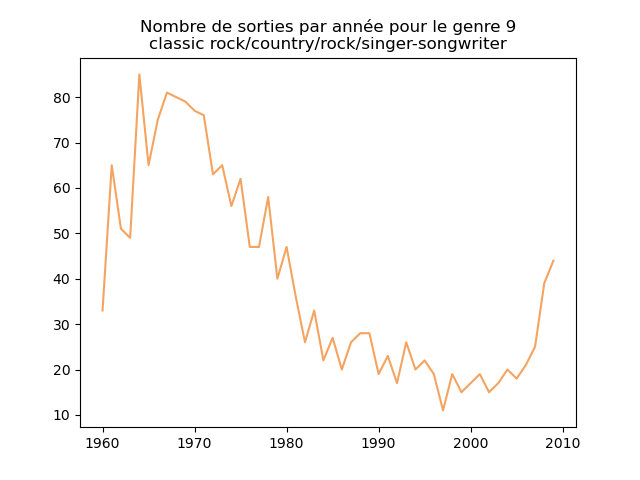
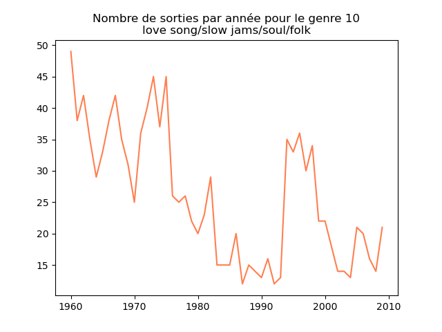


Qu'en pensez-vous ? Trouvez-vous normal que toutes ces courbes aient la même allure ? N'aviez-vous pas l'impression que les années 1970 étaient les années disco et qu'on devrait le voir ? Pareil pour la new wave dans les années 1980, le funk, sans parler du hip hop et du rap un peu plus récemment ?
Qu'est ce qui ne va pas ?
Une fois prise en compte cette remarque, j'obtiens ce genre de graphiques :
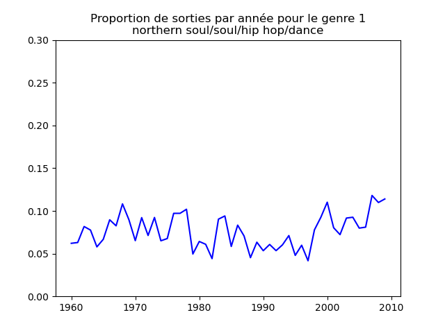


 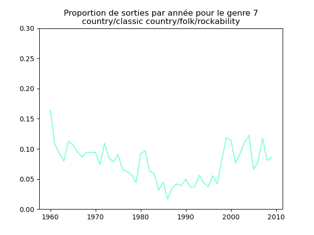
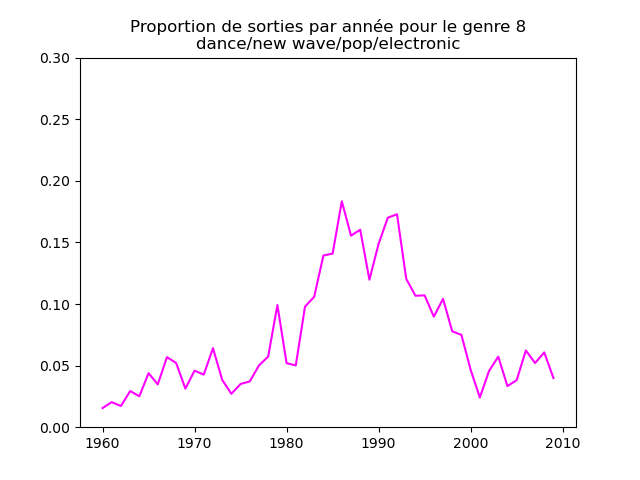
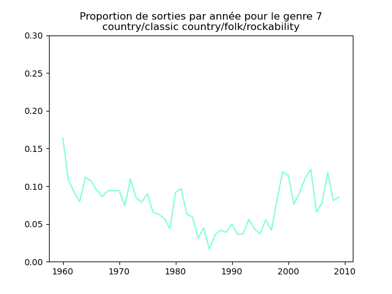
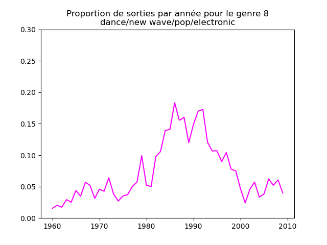
 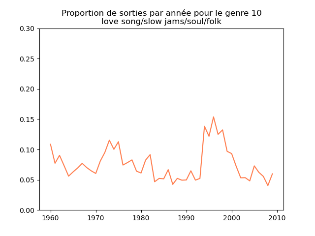
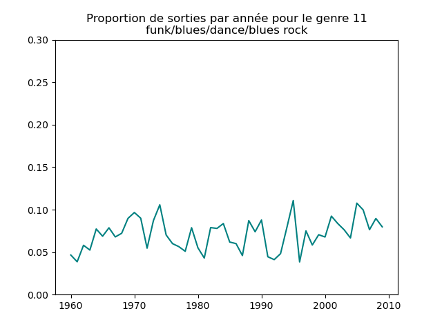
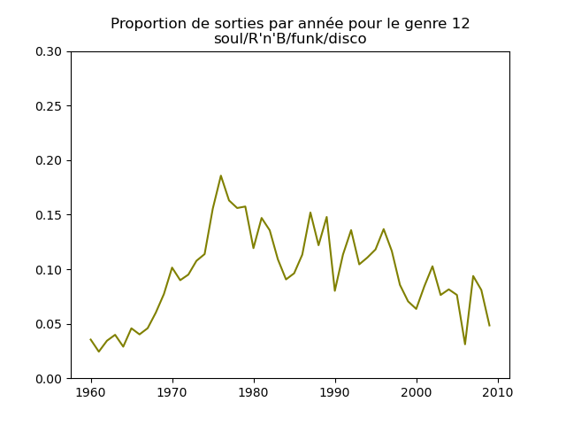
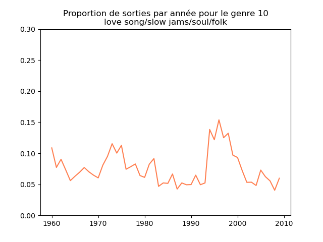
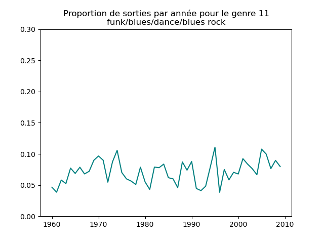
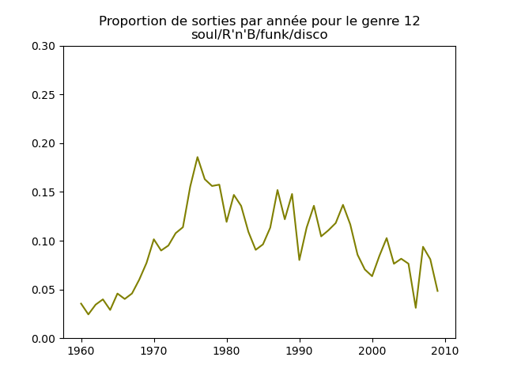

Sur ces graphiques, on voit beaucoup mieux ce que l'on s'attend à voir : l'arrivée massive to rap depuis les années 1990, la new wave dans les années 1980, le disco dans les années 1970, ... (Vous voyez la même chose que moi ?)
Ayant compris ce qui ne va pas plus haut, corrigez votre approche pour obtenir les mêmes graphiques que moi (ci-dessus). - Faites de même pour chaque trimestre.
Popularité des artistes
- On va s'intéresser à la popularité des artistes. Pour cela, pour chaque artiste, on compte le nombre de morceaux qu'il a eu dans les classements.
Quel est l'artiste qui a eu le plus de morceaux dans ce classement ?
Quels sont les artistes qui ont eu plus de 30 morceaux dans ce classement ? - Calculez le nombre d'artistes ayant eu n morceaux dans ce classement, pour n variant de 1 à la valeur maximale trouvée à la question précédente. Appelons decompte le vecteur dont le i-ème élément contient le nombre d'artistes ayant eu i morceaux dans ce classement.
- Faites un plot de decompte. Vous devez obtenir quelque chose comme cela :

- Faites un plot log-log, c'est-à-dire qu'en abscisses et en ordonnées, vous mettez le log de la quantité que vous avez mise dans le plot précédent. Vous devez obtenir une figure assez remarquable.
Segmentation en genres musicaux
À faire :
- appliquer la méthode des k-moyennes aux 16 attributs hTopic_01..hTopic_08, tTopic_01..tTopic_08.
Comme le nombre de genres musicaux n'est pas connu a priori, essayez toutes les valeurs entre 2 et 25 pour le nombre de groupes.
Pour chaque segmentation, mesurer le score de silhouette.
Faire un graphique de ce score en fonction du nombre de segments.
Quel serait le nombre de genres musicaux d'après ce score ?
Trouvez-vous 13 ? Qu'en pensez-vous ?
Recommandation
La recommandation est un élément essentiel des sites Internet diffusant de la musique, et plus généralement, des sites de commerce électronique. La réalisation d'un système de recommandation qui fonctionne vraiment bien est quelque chose d'assez sophistiqué, chaque entreprise ayant ses secrets de fabrication pour être meilleure, ou originale, par rapport à ses concurrentes. Néanmoins, il existe quelques principes simples sur lesquels ces systèmes s'appuient. Nous allons explorer l'un d'eux sur ce jeu de données, la recommandation par le contenu.
À suivre...
Référence
Ce TP est basé sur l'article qui suit.
[1] Mauch M., MacCallum RM, Levy M, Leroi AM. 2015 The evolution of popular music USA 1960-2010. R.Soc. open sci. 2:150081.